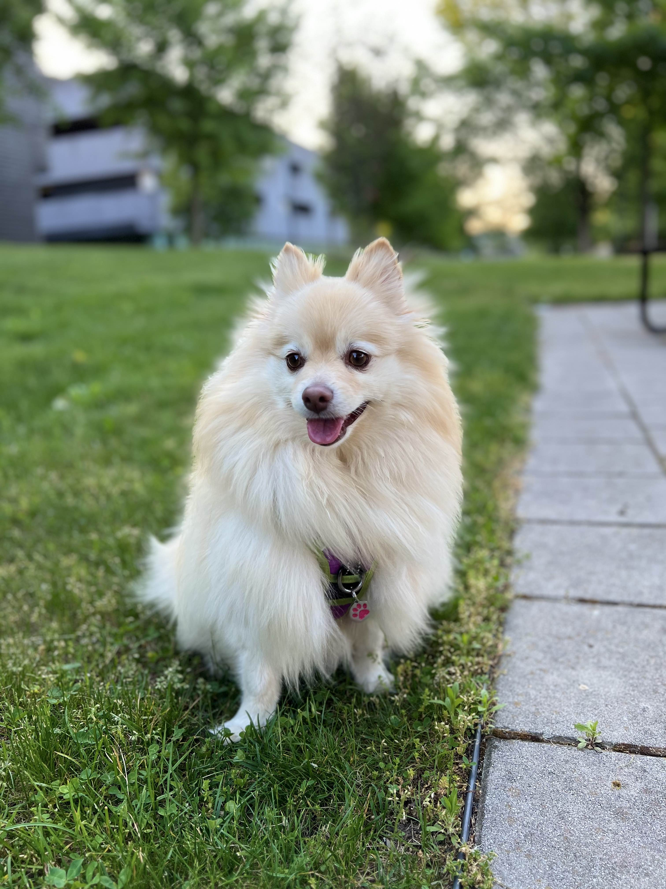
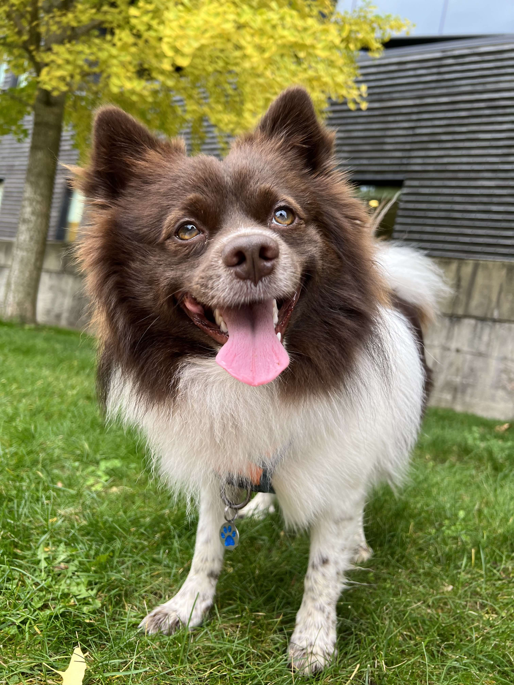

Pomeranians
My Pomeranians: Sol and Luna
A Tale of Evolution and Companionship
In my home, joy comes from two fluffy Pomeranians, Sol and Luna. These little bundles of energy are not just pets; they are a living testament to one of the most extraordinary stories of evolution and human influence - the transformation of wolves into the diverse spectrum of dogs we have today.
From Wolves to Lap Dogs:
The journey from the wilds of the wolf to the warmth of a lap dog is a tale spanning thousands of years. It’s a story of natural selection shaped by human hands. As I watch Sol and Luna play, I often marvel at how their ancestors, once fierce and wild, gradually transformed into these affectionate, loyal companions. This transformation is a remarkable example of genetic plasticity - the ability of an organism’s genome to adapt to new environments and roles.
The Science Behind the Transformation:
The domestication of dogs from wolves is a fascinating example of selective breeding. Early humans likely started this process by taming and breeding less aggressive and more friendly wolves. Over generations, these wolves evolved into various dog breeds, each with unique physical and behavioral traits suited to different societal roles.
Pomeranians, like Sol and Luna, descended from large sled dogs and were bred down to their current small size without losing their spirited and resilient nature. This size reduction is a stunning example of how selective breeding can dramatically alter physical traits in a relatively short evolutionary timeframe.
Genome Plasticity in Dogs:
The diverse range of dog breeds we see today, from the tiny Chihuahua to the majestic Great Dane, is a testament to the incredible plasticity of the canine genome. This plasticity has allowed dogs to adapt to various environments and roles - from hunting and herding to companionship and therapy.
Sol and Luna: A Personal Reflection:
Sol and Luna, with their bright eyes and playful spirits, remind me daily of the profound bond that humans and dogs have shared for millennia. They are not just pets; they represent a deep-seated connection between our species and the natural world, which speaks to our past and our capacity to shape the future.
A Symbol of Coevolution:
Their presence in my life reminds me of the unique coevolution between humans and dogs. It’s a relationship that has not only shaped the course of their species but has also profoundly impacted human society and culture.
In summary, Sol and Luna are much more than my pets; they are living symbols of the remarkable journey of domestication and the incredible adaptability of the canine genome. They embody the essence of evolution, shaped by human hands, and continue to be a source of joy and fascination in my life.
The Significance of Their Names: Sol and Luna
The celestial is beautifully mirrored in the earthly through my Pomeranians, aptly named Sol and Luna. Sol, meaning ‘Sun’ in Portuguese, epitomizes daylight’s warmth and radiant energy, much like his vibrant and lively personality. On the other hand, Luna, meaning ‘Moon’ in Spanish, reflects the serene and mystical qualities of the nocturnal sky. Together, they embody a perfect balance, much like the celestial dance of the sun and moon in the heavens. Sol’s bright, sunny disposition complements Luna’s calm and soothing presence, creating a harmonious environment that brightens daily. Their names are a constant reminder of the beauty and balance in nature, reflecting the timeless dance of light and darkness, energy and serenity, that governs our universe.

